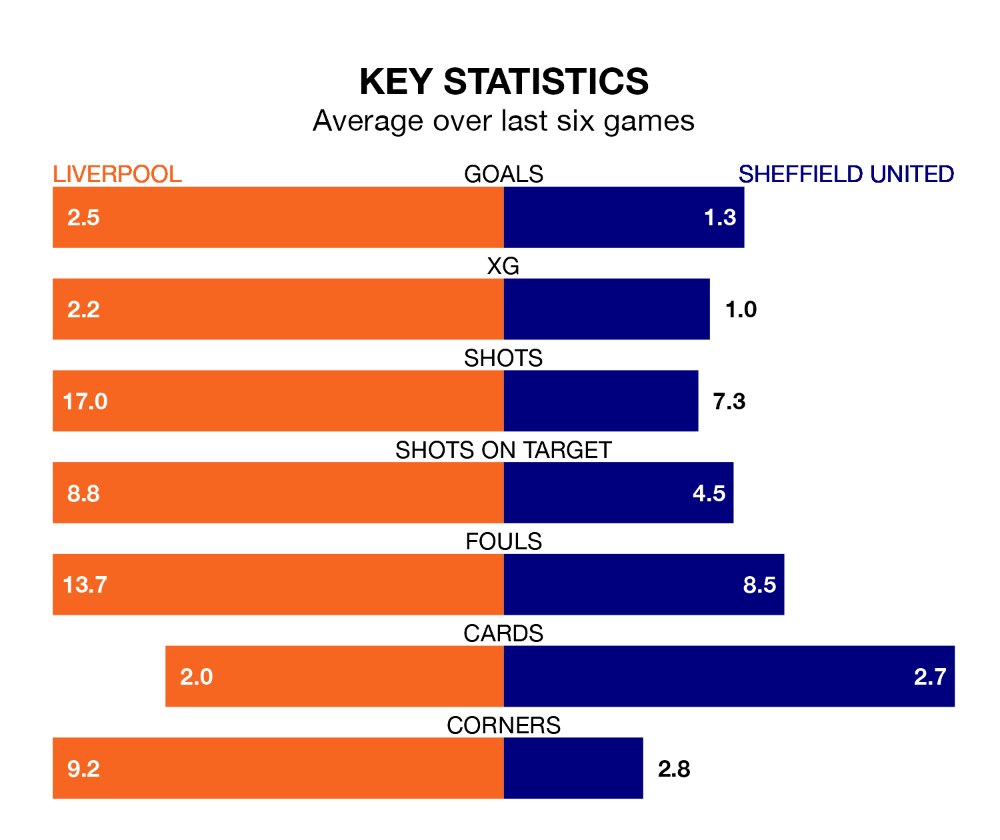

Relegation candidates Sheffield United face a challenge away against high-flying Liverpool at Anfield on Thursday.
Sheffield United are rooted to the bottom of the Premier League table, and have picked up three wins and six draws in their 29 games to date.
The Reds, meanwhile, are second in the standings with 67 points, having won 20 and drawn seven, and are one point behind table-toppers Arsenal.
With 67 goals in 29 games so far this season, Liverpool are the league's joint-second-highest scorers with 2.3 goals per game. And they are conceding fewer than average, letting in 27 goals at a rate of 0.9 per game.
United, meanwhile, are below average scorers, with 0.9 goals per game, compared to a league average of 1.6. They have conceded 2.7 goals per game.
In Mohamed Salah, the Reds have one of the league's sharpest shooters so far this season. He has notched 16 goals in 23 appearances, to sit second in the scoring charts.
His goal rate of one every 119 minutes is quicker than that of Oliver McBurnie, the Blades's top scorer with a goal every 200 minutes, and a total of five goals in 17 games.
The home side are in fantastic form in the Premier League, with five wins and a draw from their last six games.
With a win and two draws over that period, the visitors' form is much worse – they have taken five points from 18, compared to Liverpool's 16.
In the last five years, Liverpool and United have played each other on five occasions. Liverpool won all of them.
On average, the Reds scored 1.8 goals and the Blades 0.2 in those matches.
Their last meeting was on December 6, when Liverpool won 2-0 away.
Liverpool's last match was on Sunday, a 2-1 win against Brighton and Hove Albion, with Luis Díaz and Salah getting the goals for the Reds.
United drew 3-3 with Fulham last time out, on Saturday, with Ben Brereton (two) and McBurnie on the scoresheet.
Thursday's match will be refereed by Stuart Attwell, who has taken charge of 12 Premier League games so far this season, issuing three red cards and booking 61 players. He has awarded three penalties.
The last Liverpool game Attwell refereed was a 4-3 home win against Fulham on December 3. His last United match was their 5-0 loss at home against Brighton and Hove Albion on February 18.
Updated: 16:41 (UTC), 04/04/24